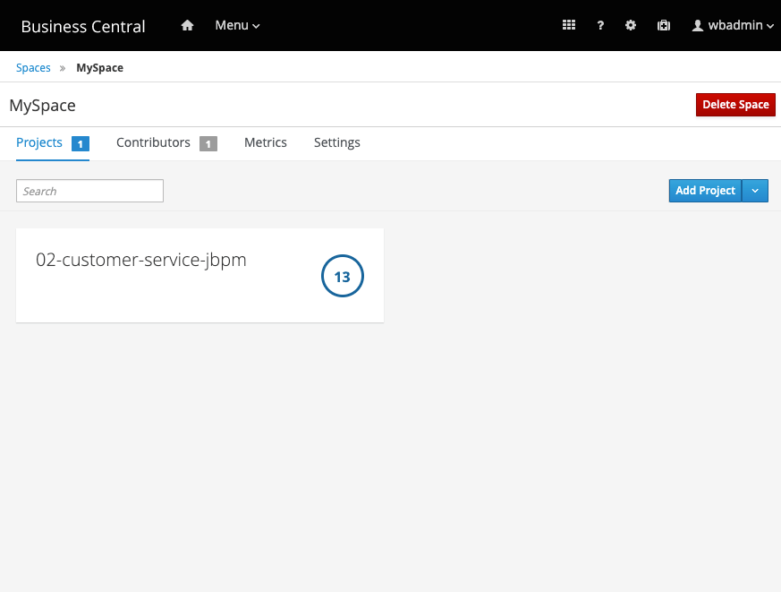
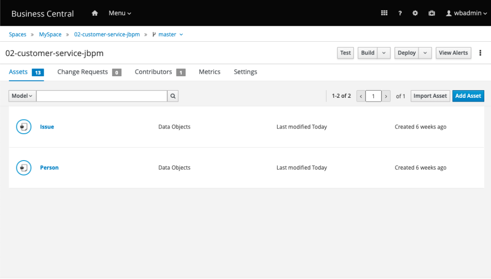
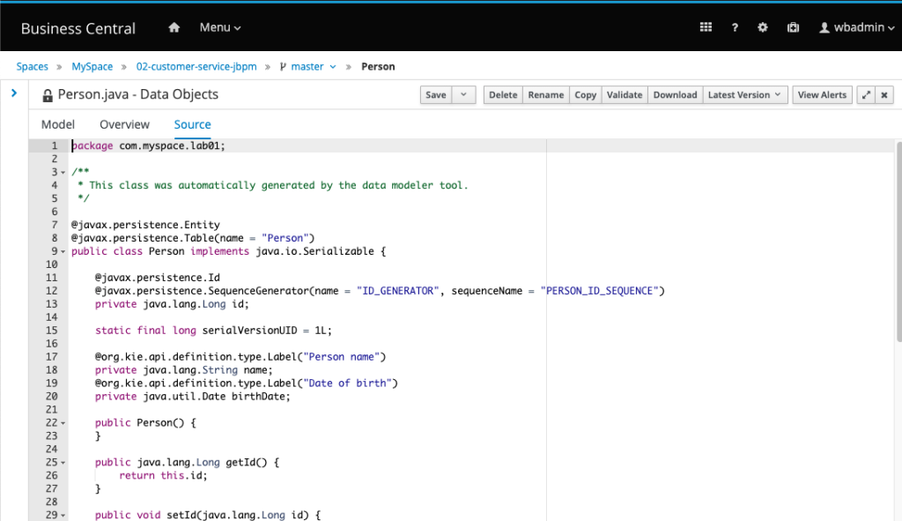
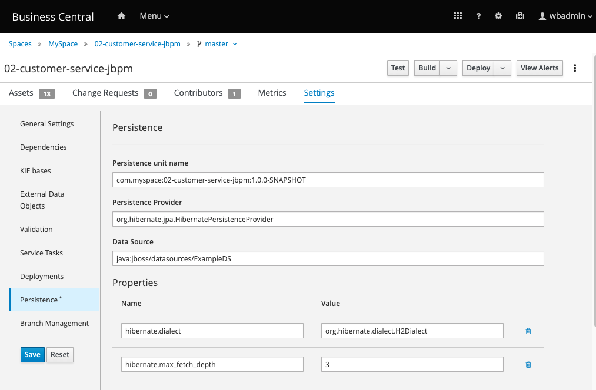
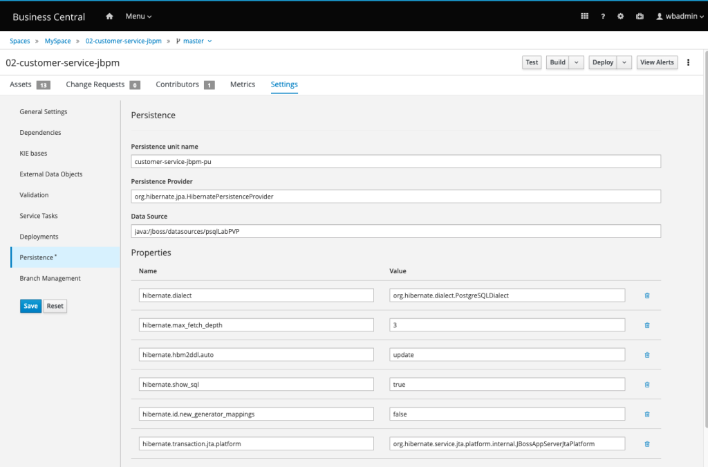
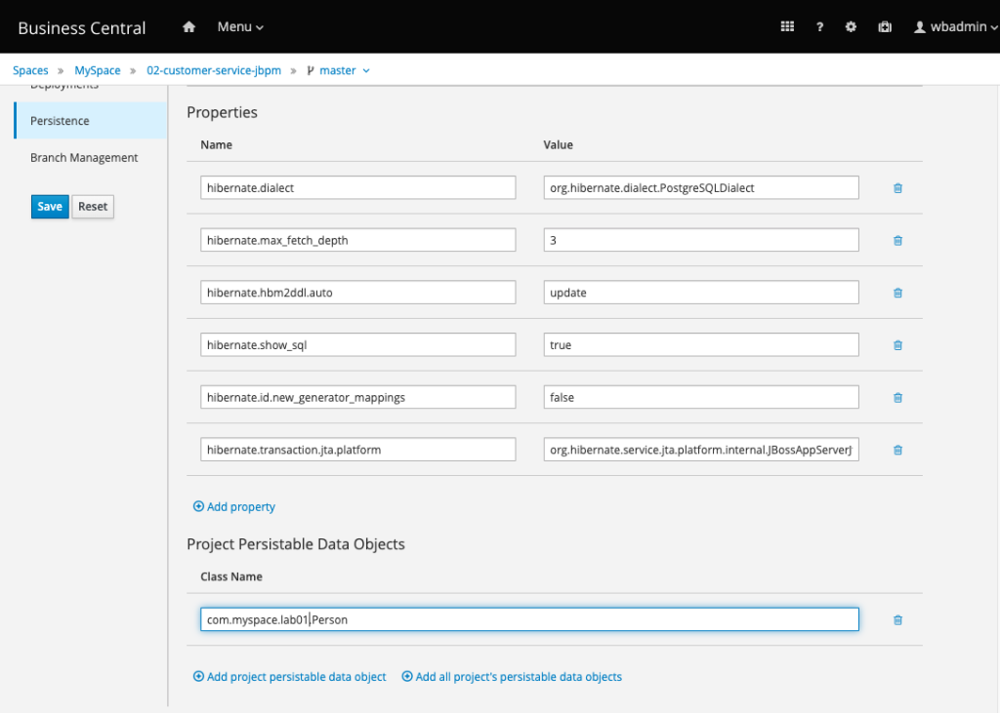
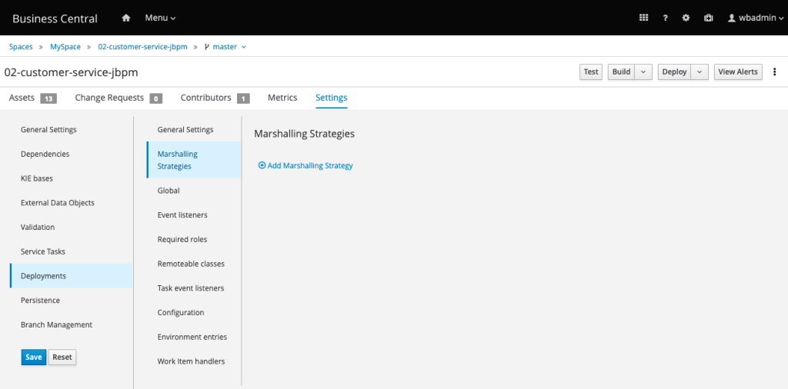

Persisting custom data: Configuring external persistence
When working with business processes, it is expected to work with persistent process data scenarios. Considering this situation, it is common for users to use a different database to store process data, apart from the database where the domain information is stored.
As an example, storing critical information from customers apart from the engine database is an expected data architecture. In this way, the user can maintain the data consistent and isolated. But what if these objects, stored in a different database, needs to be used in one of the business automation projects?
[INFO] Many of the concepts here applied are valid for any application which involves distributed transactions (XA Transactions), this means, any application which might possibly have a transaction which spawns through two or more different databases. An overview of how application deployed in Java EE application servers, communicates with a database can be found at this blog post: Datasources, what, why, how?
Let’s understand how to configure and access different databases within the same project.
Pluggable Variable Persistence (PVP)
Here are the steps required to make a business automation process store process variables (domain information) in a different database:
- Configure the app server datasource pointing the database where you want to store the custom data;
- Make sure custom POJOs (the object to be persisted) are a JPA object
- Data Object must implement Serializable interface;
- Must be a JPA Entity;
- Must have a unique id, a primary key;
- Configure business automation project
- Configure a JPA Marshalling Strategy;
- Configure the persistence unit (pointing to the datasource mentioned on the first step);
Once this is done, every time this object gets created or updated during the process execution, it will be properly persisted on the database. Let’s check this with a hands-on exercise.
Persisting custom objects using PVP
Bootstrap a database
To run this example, using docker to start a database is the easiest way to get a database up and running. Make sure you have docker running in your environment. Let’s create a directory to store the database information.
$ mkdir -p ~/projects/jbpm-getting-started-lab/postgresql
Make sure you have Docker up and running. Then you can start a Postgres container:
$ docker run --name jbpm-postgres-container -e POSTGRES_PASSWORD=psqlpass -d -p 6543:5432 -v $HOME/projects/jbpm-getting-started-lab/postgres:/var/lib/postgresql postgres:9.4
This command will download the image (if you don’t have it locally), start a container named postgres, based on the latest PostgreSQL image. expose the internal port 5432 opened by PostgreSQL, to be accessed externally also in 6543.
Let’s enter in this SQL Server to create a new database for our jBPM tables. Run the command below to get the Container ID of this psql container:
$ docker ps CONTAINER ID IMAGE COMMAND CREATED STATUS PORTS NAMES 620350186bbe postgres:9.4 "docker-entrypoint.s…" About a minute ago Up About a minute 0.0.0.0:6543->5432/tcp jbpm-postgres-container
Use the whole ID, or simply the first two numbers, to enter the container. Then, we will start the psql client:
$ docker exec -it jbpm-postgres-container /bin/bash $ psql -h localhost -U postgres -d postgres
Now, let’s create a database to be used by jBPM, with a new a user and password. This user needs permision on this new database. The tables will be created automatically by jBPM on startup.
[TIP] You might want to create additional indexes on some tables and columns in your production environment
CREATE DATABASE jbpmdb; CREATE USER jbpmdb WITH ENCRYPTED PASSWORD 'jbpmdb'; GRANT ALL PRIVILEGES ON DATABASE jbpmdb TO jbpmdb;
And create another database, to store the specific domain data.
CREATE DATABASE labpvp; CREATE USER labuser WITH ENCRYPTED PASSWORD 'labuser'; GRANT ALL PRIVILEGES ON DATABASE labpvp TO labuser;
When done, type q and press enter, to quit psql client, and then exit to exit the container.
Configuring the Application Server
Now, let’s configure WildFly: we will create two datasources one connecting to jbpmdb and other to labpvp . Once the datasources are configured, applications can start connecting to these databases.
In this example we expect that you have downloaded jBPM and have it available in your ~/projects directory. If you want to use the commands here, you can optionally create a symbolic link for the folder with the command below:
$ ln -s ~/projects/jbpm-server-7.38.0.Final-dist ~/projects/jbpm
Configuring WildFly basically requires two steps:
- Adding a JDBC driver (the responsible for teaching WildFly how to talk the specific database language);
- Adding a datasource with the credentials, connection URL, and driver information.
The simplest way to add a JDBC driver to WildFly is deploying it. Download postgresql-42.2.2.jar and place it into ~/projects/jbpm/standalone/deployments. WildFly will immediately tell you the driver is deployed:
16:11:07,515 INFO [org.jboss.as.connector.deployers.jdbc] (MSC service thread 1-4) WFLYJCA0005: Deploying non-JDBC-compliant driver class org.postgresql.Driver (version 42.2) 16:11:07,540 INFO [org.jboss.as.connector.deployers.jdbc] (MSC service thread 1-5) WFLYJCA0018: Started Driver service with driver-name = postgresql-42.2.12.jar 16:13:33,885 INFO [org.jboss.as.server] (ServerService Thread Pool -- 45) WFLYSRV0010: Deployed "postgresql-42.2.12.jar" (runtime-name : "postgresql-42.2.12.jar")
Let’s use the JBoss CLI script, which is less error-prone, to do the configuration. Start your WildFly in one terminal tab, and open another terminal tab so you can connect to it using CLI.
$ ~/projects/jbpm/bin/jboss-cli.sh -c
Add a new datasource, informing the connection data, and your deployed driver name:
[standalone@localhost:9990 /] xa-data-source add --name=psqljBPMXA --jndi-name="java:/jboss/datasources/psqljBPMXADS" --user-name=jbpmdb --password=jbpmdb --driver-name=postgresql-42.2.2.jar --xa-datasource-class=org.postgresql.xa.PGXADataSource --xa-datasource-properties=[{ServerName=localhost,PortNumber=6543,DatabaseName=jbpmdb}]Now, let’s add a datasource to connect to our domain-specific database, labpvp:
[standalone@localhost:9990 /] xa-data-source add --name=psqlLabPVP --jndi-name="java:/jboss/datasources/psqlLabPVP" --user-name=labuser --password=labuser --driver-name=postgresql-42.2.2.jar --xa-datasource-class=org.postgresql.xa.PGXADataSource --xa-datasource-properties=[{ServerName=localhost,PortNumber=6543,DatabaseName=labpvp}]The following test commands validate both datasource configurations:
[standalone@localhost:9990 /] /subsystem=datasources/xa-data-source=psqljBPMXA:test-connection-in-pool
{
"outcome" => "success",
"result" => [true]
}Finally, we need to tell jBPM to stop using the H2 database and start using Postgres by connecting through the datasource with JNDI name: java:/jboss/datasources/psqljBPMXADS .
[standalone@localhost:9990 /] /system-property=org.kie.server.persistence.ds:write-attribute(value=java:/jboss/datasources/psqljBPMXADS, name=value) [standalone@localhost:9990 /] /system-property=org.kie.server.persistence.dialect:add(value=org.hibernate.dialect.PostgreSQLDialect)
Restart jBPM.
It will bootstrap creating its tables inside the Postgres in your docker container. You can confirm this by getting into your Postgres container and listing the tables:
$ docker exec -it jbpm-postgres-container /bin/bash root@620350186bbe:/# psql -h localhost -U jbpmdb -d jbpmdb psql (9.4.22) Type "help" for help. jbpmdb=>d
Creating persistent objects with Business Central
Scenario: You joined a team which has on-going project, hello-jbpm. In this project, the final user does a question, complain or suggestion and gets an automatic or a manual answer. You noticed that the data architecture can be improved by storing the reported issue and person details, into a separate database. apart from the one used by the engine.
Import project 02-customer-service-jbpm if you don’t have it in your business central yet. You should see it in your space:

In order to persist a POJO into a database, we need will make use of JPA benefits and to convert it into a JPA Entity.
Open hello-jbpm project, and notice both data object named Issue and the Person.

Let’s start by configuring Person. By clicking on the “Source” tab you can view it’s code.
[TIP] In order to be persisted, classes should implement java.io.Serializable interface. By default, Business Central creates the Data Objects implementing Serializable interface.
- Transform it into an entity by adding
@javax.persistence.Entityannotation; - Inform the name of the table you want to store this Data Object with the annotation
@javax.persistence.Table(name = "Person") - This class does not have a primary key yet. Add an id, with type
LongtoPerson.java. Don’t forget the attribute should have the get and set method and be annotated with@javax.persistence.Id.
Person.java should look like this:

@javax.persistence.Entity
@javax.persistence.Table(name = "Person")
public class Person implements java.io.Serializable {
@javax.persistence.Id
@javax.persistence.SequenceGenerator(name = "ID_GENERATOR", sequenceName = "PERSON_ID_SEQUENCE")
private java.lang.Long id;Click on the save button.
Configuring business application persistence unit with Business Central
The persistence unit, if the configuration which tells a Java EE application which datasource it must use to connect to the database. To configure a business application to persist process variables in a custom database, inform the datasource details in the persistence unit, and create a Marshaller configuration. This Marshaller configuration allows the engine to convert the variables data to/from process and database.
When the JPA Marshaller is configured, every JPA Entity used as a process variable, is automatically persisted in the database pointed by the application used datasource.
- To configure the persistence unit details, access the project Settings, and select the Persistence option.

2. Considering we are using PostgreSQL and the datasource configured in the last step, use the following values in the form:
- Persistence Unit:
customer-service-jbpm-pu - Data Source
java:/jboss/datasources/psqlLabPVP - hibernate.dialect:
org.hibernate.dialect.PostgreSQLDialect - hibernate.show_sql:
true

3. Set the show_sql attribute to true, to enable logs and permit checking in the server logs if the entity is being manipulated as expected. Save the configuration.
4. Make sure you scroll down and add the persistable class, Person:

4. Still in the project Settings, configure the JPA Marshaller. Access the Deployments option, and select Marshalling Strategies.

5. Click on “Add Marshalling Strategy“, insert the following value and hit save:
new org.drools.persistence.jpa.marshaller.JPAPlaceholderResolverStrategy("customer-service-jbpm-pu", classLoader)Now you have JPA Classes ready to be used as process variables, and to be automatically persisted in a different database!
You can check the result of this work by clicking on the Deploy button. If everything is properly set, you should see something similar in the server log:
17:41:12,801 INFO [stdout] (default task-20) Hibernate: create table Person (id int8 not null, birthDate timestamp, name varchar(255), primary key (id))
Start a new process instance, and validate if the object was persisted in the database table you specified.
This blog post is part of the fifth section of the jBPM Getting started series:
Techniques to boost a BA Project